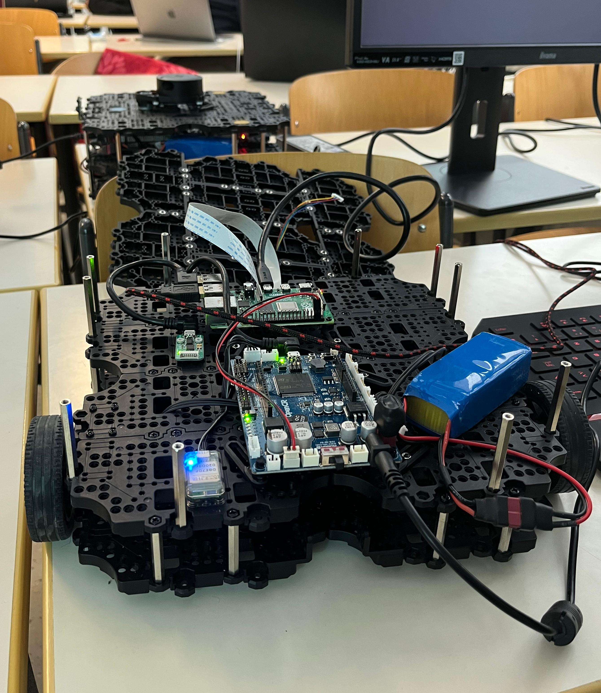

ROS2 · Contrôle TurtleBot3
Mise en place d’un contrôle en temps réel du TurtleBot3 à l’aide d’un joystick, grâce aux nodes ROS2 et aux mécanismes de QoS. Projet testé d’abord en simulation Gazebo avant déploiement sur le robot physique.